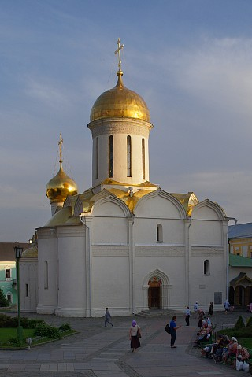

Троицкий собор
-

- Троицкий собор
Троицкий собор — главный соборный храм и древнейшее из сохранившихся сооружений Троицкого монастыря, первое каменное здание Лавры. Он был воздвигнут преподобным Никоном в 1422-23 гг. «в честь и похвалу» основателю монастыря, преподобному Сергию Радонежскому на месте первой деревянной Троицкой церкви. Строительство храма осуществлялось при содействии сына великого князя Дмитрия Ивановича Донского — Звенигородского и Галицкого князя Юрия Дмитриевича, крестника Преподобного Сергия. Место, где покоятся мощи Троицкого первоигумена, — святая святых монастыря.
Троицкий собор представляет собой небольшой четырехстолпный крестовокупольный храм с одной главой и тремя невысокими апсидами на высоком подклете (часть подклета в настоящее время закрыта культурным слоем). Стены собора сложены из правильных блоков белого камня, их толщина и массивность подчеркивается глубокими перспективными порталами и узкими щелевидными окнами. Плоские широкие лопатки придают фасадам трехчастное деление и имеют значение конструктивных пилястр. Гладкие стены собора завершаются килевидными закомарами, арочная кладка которых опирается на капители пилястр и отделена от плоскости стен дополнительным уступом (впервые в русском зодчестве таким образом используется оригинальная трактовка классической ордерной системы). Килевидную форму закомар повторяют два ряда кокошников у основания барабана купола, сохранившего древнюю шлемовидную форму. Единственным украшением собора служит широкий орнаментальный пояс из трех лент искусно высеченного «плетеного» узора, который украшает фасады, алтарные апсиды и барабан купола.